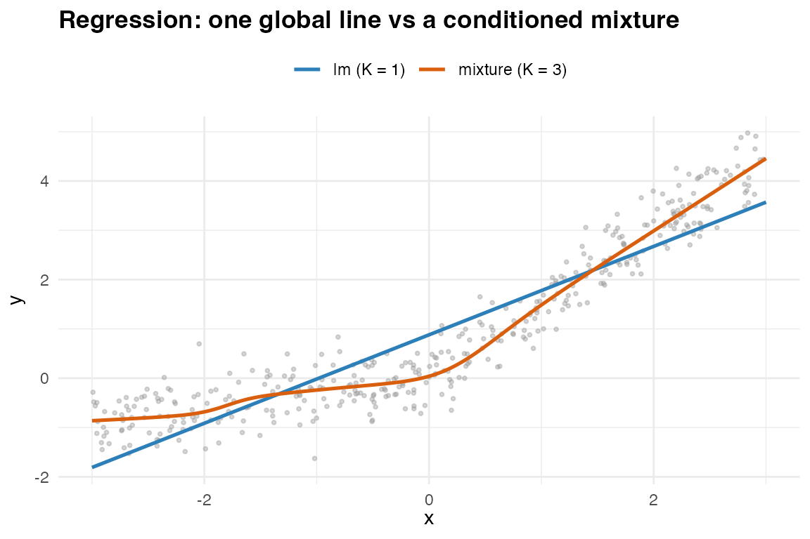
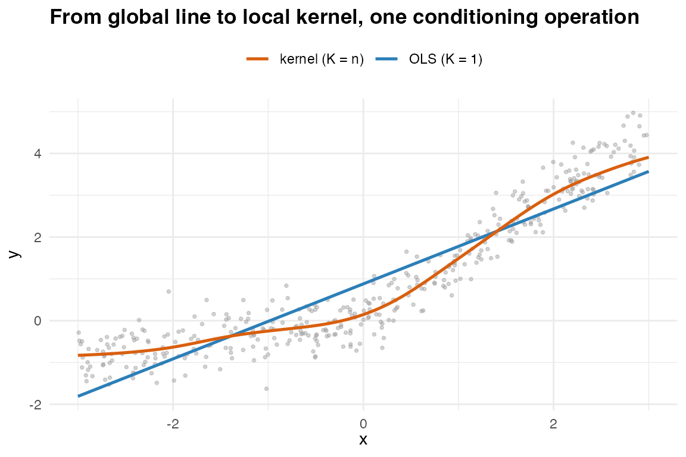
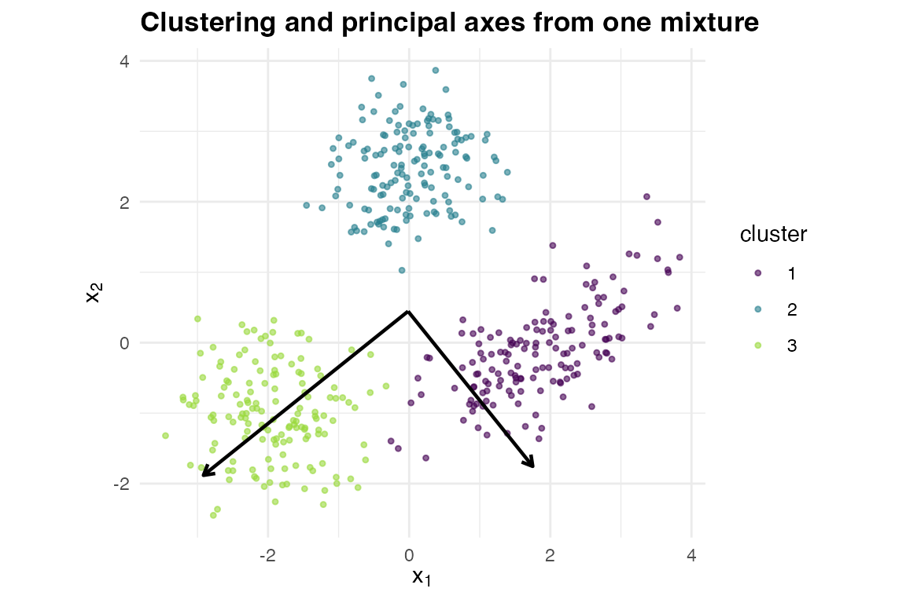

A fitted Gaussian mixture over your data is a single object, and
several classical analyses follow from it in closed form – because
conditioning, marginalisation, and eigendecomposition are all exact on a
Gaussian mixture. This vignette shows proxymix standing in
for five familiar tools. Each section keeps the same shape: the
problem, the usual tool, the
proxymix route, the idea
behind the substitution, and what it does and does not
replace. The point is one fitted object serving several jobs, with the
trade-offs in plain view – not that the mixture always wins.
Regression – from lm() to a conditioned mixture
Problem. Predict an outcome
from a predictor
.
Usual tool. lm() / glm() –
one global line. proxymix route. Fit a
mixture over the joint
,
then read
by conditioning. At
this is least squares; at
the gate bends the line.
n <- 400L
x <- runif(n, -3, 3)
y <- 0.3 * x + 1.2 * pmax(x, 0) + rnorm(n, sd = 0.4) # a bent relationship
dat <- data.frame(y = y, x = x)
joint <- gmm_target_from_samples(cbind(y, x))
fit1 <- fit_proxymix(joint, N = 1L, regime = "moment", ridge_eps = 0) # = OLS
fit3 <- fit_proxymix(joint, N = 3L, regime = "sample", max_iter = 150L)
## At K = 1 the conditional slope equals the lm coefficient, exactly.
slope_mix <- gmm_conditionalise(fit1, given = c(NA, 1))@means[[1L]] -
gmm_conditionalise(fit1, given = c(NA, 0))@means[[1L]]
c(proxymix = slope_mix, lm = unname(coef(lm(y ~ x, dat))["x"]))
#> proxymix lm
#> 0.8968121 0.8968121
.cond_mean <- function(fit, xv) {
vapply(xv, function(xx) {
g <- gmm_conditionalise(fit, given = c(NA, xx))
sum(g@weights * vapply(g@means, function(m) m[1L], numeric(1L)))
}, numeric(1L))
}
if (requireNamespace("ggplot2", quietly = TRUE)) {
library(ggplot2)
grid <- data.frame(x = seq(-3, 3, length.out = 200L))
grid$ols <- as.numeric(predict(lm(y ~ x, dat), newdata = grid))
grid$mix <- .cond_mean(fit3, grid$x)
ggplot() +
geom_point(data = dat, aes(x, y), colour = "grey60", alpha = 0.4, size = 0.7) +
geom_line(data = grid, aes(x, ols, colour = "lm (K = 1)"), linewidth = 0.9) +
geom_line(data = grid, aes(x, mix, colour = "mixture (K = 3)"), linewidth = 0.9) +
scale_colour_manual(name = NULL,
values = c("lm (K = 1)" = "#2C7FB8",
"mixture (K = 3)" = "#D95F0E")) +
labs(title = "Regression: one global line vs a conditioned mixture",
x = expression(x), y = expression(y)) +
theme_minimal(base_size = 11) +
theme(legend.position = "top", plot.title = element_text(face = "bold"))
}
One global line (K = 1, = OLS) versus a conditioned mixture (K = 3).
Idea. Each component supplies an affine conditional mean ; the responsibilities gate them, so the global mean is nonlinear – Gaussian-mixture regression.
Does / does not. Captures nonlinear, heteroscedastic, even multimodal conditional densities, not just the mean. It does not return classical inference (standard errors, -values) by default, and it assumes Gaussian components.
Kernel regression – from Nadaraya–Watson to a conditioned KDE
Problem. Predict
from
with no global functional form – a purely local smoother. Usual
tool. Nadaraya–Watson kernel regression
(stats::ksmooth, package np): a
kernel-weighted local average of the responses.
proxymix route. Place one Gaussian per
data point over the joint
– a kernel density estimate – and read
by conditioning. With a Gaussian kernel that conditional mean
is the Nadaraya–Watson estimator, exactly. Where
lm() sat at
(one global line), Nadaraya–Watson sits at
(one component per datum, fully local), and from_kde()
lands anywhere in between – a single axis with least squares at one end
and kernel smoothing at the other.
h <- 0.4 # kernel bandwidth
nw <- function(xq) vapply(xq, function(q) {
w <- dnorm(q, x, h); sum(w * y) / sum(w) # Nadaraya--Watson, Gaussian kernel
}, numeric(1L))
## One Gaussian per datum -- a kernel density estimate of the joint (y, x) --
## then condition on x and read the conditional mean.
kde <- gmm(weights = rep(1 / n, n),
means = lapply(seq_len(n), function(i) c(y[i], x[i])),
covariances = rep(list(diag(c(h^2, h^2))), n))
xq <- c(-2, -0.5, 1, 2.2)
c(max_abs_diff = max(abs(nw(xq) - .cond_mean(kde, xq)))) # equal to NW
#> max_abs_diff
#> 3.552714e-15
if (requireNamespace("ggplot2", quietly = TRUE)) {
grid_nw <- data.frame(x = seq(-3, 3, length.out = 200L))
grid_nw$ols <- as.numeric(predict(lm(y ~ x, dat), newdata = grid_nw))
grid_nw$nw <- nw(grid_nw$x)
ggplot() +
geom_point(data = dat, aes(x, y), colour = "grey60", alpha = 0.4, size = 0.7) +
geom_line(data = grid_nw, aes(x, ols, colour = "OLS (K = 1)"), linewidth = 0.9) +
geom_line(data = grid_nw, aes(x, nw, colour = "kernel (K = n)"), linewidth = 0.9) +
scale_colour_manual(name = NULL,
values = c("OLS (K = 1)" = "#2C7FB8",
"kernel (K = n)" = "#D95F0E")) +
labs(title = "From global line to local kernel, one conditioning operation",
x = expression(x), y = expression(y)) +
theme_minimal(base_size = 11) +
theme(legend.position = "top", plot.title = element_text(face = "bold"))
}
One axis, two endpoints: the global line (K = 1, OLS) and the fully local kernel smoother (K = n, Nadaraya-Watson).
Idea. Conditioning a per-point KDE gives responsibilities and per-component means , so – the Nadaraya–Watson ratio. Kernel regression is therefore Gaussian-mixture regression with one component per datum, a diagonal bandwidth, and only the conditional mean read off. The bandwidth plays the role of the component covariance.
Does / does not. The same operation returns the full
conditional density (predictive variance, quantiles,
multimodality), and gmm_conditional_entropy() scores its
uncertainty – neither available from the bare Nadaraya–Watson mean. It
also works in regime (iii), where you can evaluate the joint density but
have no points to average, so a literal kernel estimator does not exist.
The price is that the one-per-datum estimate costs
per query; from_kde() compresses it to a
-component
mixture for
queries, and – as with any kernel method – the bandwidth must be
chosen.
Clustering – from kmeans() to the mixture
components
Problem. Group rows by similarity. Usual
tool. kmeans(), or mclust (which fits
exactly this model). proxymix route.
fit_proxymix(N = K, regime = "sample") – the components
are the clusters and the responsibilities are soft
assignments.
X <- rbind(
mvnfast::rmvn(150L, c(-2, -1), 0.5 * diag(2)),
mvnfast::rmvn(150L, c( 2, 0), matrix(c(0.6, 0.3, 0.3, 0.4), 2L)),
mvnfast::rmvn(150L, c( 0, 2.5), 0.3 * diag(2))
)
colnames(X) <- c("V1", "V2")
ct <- gmm_target_from_samples(X)
fitc <- fit_proxymix(ct, N = 3L, regime = "sample", max_iter = 150L)
## Soft assignment = posterior responsibility of each component.
.responsibilities <- function(fit, x) {
comp <- vapply(seq_len(gmm_n_components(fit)), function(k) {
fit@weights[k] *
mvnfast::dmvn(x, mu = fit@means[[k]], sigma = fit@covariances[[k]])
}, numeric(nrow(x)))
comp / rowSums(comp)
}
resp <- .responsibilities(fitc, X)
head(round(resp, 3L), 3L)
#> [,1] [,2] [,3]
#> [1,] 0.000 0 1.000
#> [2,] 0.001 0 0.999
#> [3,] 0.001 0 0.999Idea. Soft, model-based clustering: a point’s assignment to cluster is its posterior responsibility .
Does / does not. Gives soft, full-covariance,
density-aware clusters (ellipsoidal, not spherical like
-means),
and it doubles as a density estimate. It does not choose
for you (use bic_aic()), and kmeans() is
faster at very large
.
Principal components – from prcomp() to the fitted
covariance
Problem. Find the directions of greatest variation.
Usual tool. prcomp().
proxymix route. Fit a single Gaussian
(N = 1, regime = "moment") and eigendecompose
its covariance.
fit_pca <- fit_proxymix(ct, N = 1L, regime = "moment", ridge_eps = 0)
ev <- eigen(fit_pca@covariances[[1L]])$vectors
pr <- prcomp(X)$rotation
## Identical to the prcomp rotation, up to the sign convention of each axis.
max(abs(abs(ev) - abs(unname(pr))))
#> [1] 5.551115e-16
if (requireNamespace("ggplot2", quietly = TRUE)) {
vals <- eigen(fit_pca@covariances[[1L]])$values
mu <- fit_pca@means[[1L]]
axes <- data.frame(
x = mu[1L], y = mu[2L],
xend = mu[1L] + 2 * sqrt(vals) * ev[1L, ],
yend = mu[2L] + 2 * sqrt(vals) * ev[2L, ]
)
pts <- data.frame(X, cluster = factor(max.col(resp)))
ggplot() +
geom_point(data = pts, aes(V1, V2, colour = cluster), alpha = 0.6, size = 0.9) +
geom_segment(data = axes, aes(x = x, y = y, xend = xend, yend = yend),
arrow = grid::arrow(length = grid::unit(0.2, "cm")),
linewidth = 0.8) +
scale_colour_viridis_d(name = "cluster", end = 0.85) +
coord_equal() +
labs(title = "Clustering and principal axes from one mixture",
x = expression(x[1]), y = expression(x[2])) +
theme_minimal(base_size = 11) +
theme(plot.title = element_text(face = "bold"))
}
#> Warning in data.frame(x = mu[1L], y = mu[2L], xend = mu[1L] + 2 * sqrt(vals) *
#> : row names were found from a short variable and have been discarded
Clustering (colour) and the principal axes (arrows) read off one mixture.
Idea. PCA is the eigendecomposition of the covariance. The moment-matched single Gaussian carries the sample covariance exactly, so its eigenvectors are the principal components; with you get a local PCA inside each cluster.
Does / does not. Recovers PCA exactly at
and a local PCA at
.
For a one-off linear projection prcomp() is more direct –
loadings, scree plots, and biplots come for free there.
Penalised regression – ridge as a covariance ridge
Problem. Stabilise a regression when predictors are
collinear. Usual tool. glmnet (ridge /
lasso), MASS::lm.ridge. proxymix
route. The ridge_eps argument adds
to the component covariance, which shrinks the conditional regression –
exactly an
(ridge) penalty.
lambda <- c(0, 0.5, 2, 8)
slope_pm <- vapply(lambda, function(lam) {
f <- fit_proxymix(joint, N = 1L, regime = "moment", ridge_eps = lam)
gmm_conditionalise(f, given = c(NA, 1))@means[[1L]] -
gmm_conditionalise(f, given = c(NA, 0))@means[[1L]]
}, numeric(1L))
data.frame(
lambda = lambda,
proxymix_slope = round(slope_pm, 4L),
ridge_formula = round(cov(x, y) / (var(x) + lambda), 4L)
)
#> lambda proxymix_slope ridge_formula
#> 1 0.0 0.8968 0.8968
#> 2 0.5 0.7680 0.7680
#> 3 2.0 0.5367 0.5367
#> 4 8.0 0.2434 0.2434Idea. Conditioning gives . Ridging yields – the ridge estimator – so the slope shrinks toward zero as grows.
Does / does not. Delivers ridge-style shrinkage and
numerical stability. There is no Gaussian-mixture analogue of the lasso:
shrinkage matches a Gaussian prior,
sparsity a Laplace prior that lies outside the Gaussian family – so
proxymix does not perform variable selection.
A few more, in one line each
-
Imputation –
gmm_conditionalise()on the observed coordinates gives the conditional-mean (or, viargmm(), a sampled) fill-in. -
Density estimation – the native use;
from_kde()compresses a kernel estimate into a closed-form mixture (seevignette("from_kde")). -
Kalman filtering –
gmm_observe()is the mixture Kalman update (seevignette("operator_calculus")).
Summary
| Method | Usual tool |
proxymix route |
What you gain | What you give up |
|---|---|---|---|---|
| Regression |
lm / glm
|
mixture over
+ gmm_conditionalise()
|
nonlinear, heteroscedastic, multimodal conditional densities | built-in inference; Gaussian components |
| Kernel regression |
ksmooth / np (Nadaraya–Watson) |
per-point KDE + gmm_conditionalise(); compress with
from_kde()
|
full conditional density, uncertainty, the evaluate-only regime | per query unless compressed; bandwidth choice |
| Clustering |
kmeans / mclust
|
fit_proxymix(regime = "sample") |
soft, ellipsoidal, density-aware clusters | automatic ; speed at huge |
| PCA | prcomp |
eigen() of the N = 1 covariance |
local PCA per cluster at | loadings / scree / biplot conveniences |
| Ridge |
glmnet / lm.ridge
|
ridge_eps on the covariance |
shrinkage from one object | sparsity / variable selection |
When to reach for the specialised tool
Use the purpose-built tool when its strengths are exactly what you
need: high-dimensional sparse problems suit glmnet; very
large-
clustering suits kmeans; a single linear projection suits
prcomp; classical inferential guarantees suit
lm / glm. proxymix earns its
place when you want one fitted object to serve several
of these at once, in closed form, and when the Gaussian-mixture
assumptions fit your data.
References
- de Veaux, R. D. (1989). Mixtures of linear regressions. Computational Statistics & Data Analysis 8(3), 227–245.
- Fraley, C. and Raftery, A. E. (2002). Model-based clustering, discriminant analysis, and density estimation. Journal of the American Statistical Association 97(458), 611–631.
- Jolliffe, I. T. (2002). Principal Component Analysis, 2nd ed. Springer.
- Nadaraya, E. A. (1964). On estimating regression. Theory of Probability and Its Applications 9(1), 141–142.
- Watson, G. S. (1964). Smooth regression analysis. Sankhya A 26(4), 359–372.
- Tipping, M. E. and Bishop, C. M. (1999). Probabilistic principal component analysis. Journal of the Royal Statistical Society B 61(3), 611–622.
- Hoerl, A. E. and Kennard, R. W. (1970). Ridge regression: biased estimation for nonorthogonal problems. Technometrics 12(1), 55–67.
- Hoek, J. van der and Elliott, R. J. (2024). Mixtures of multivariate Gaussians. Stochastic Analysis and Applications. doi:10.1080/07362994.2024.2372605.